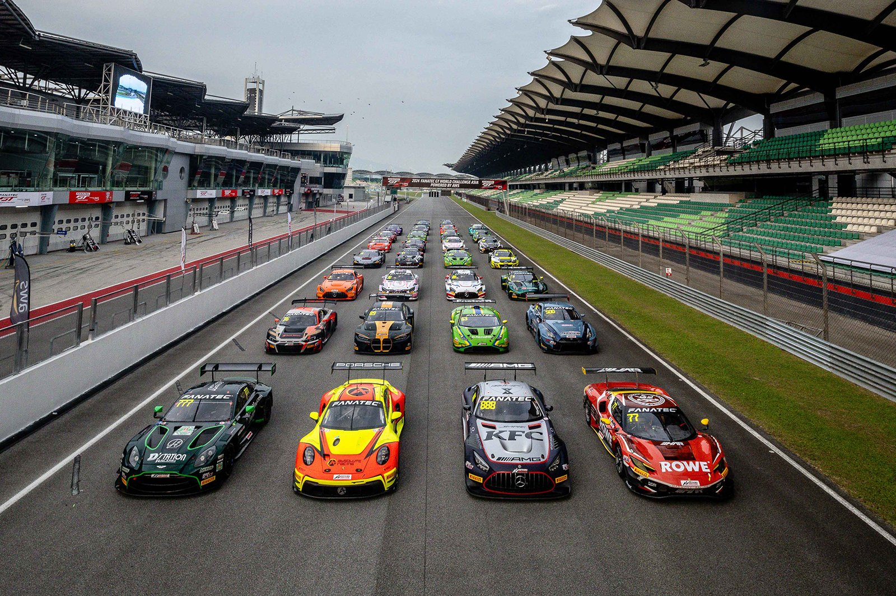
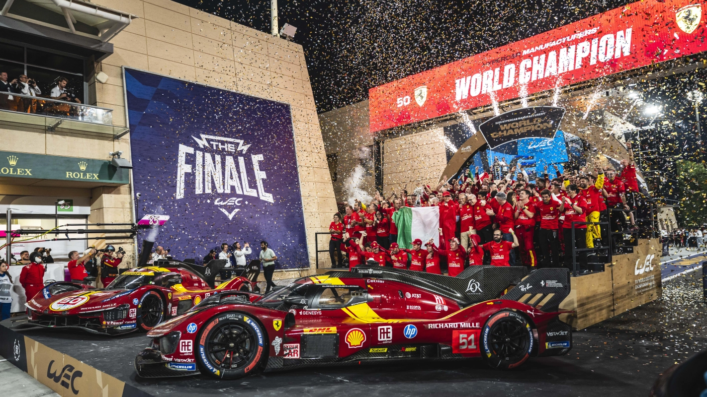
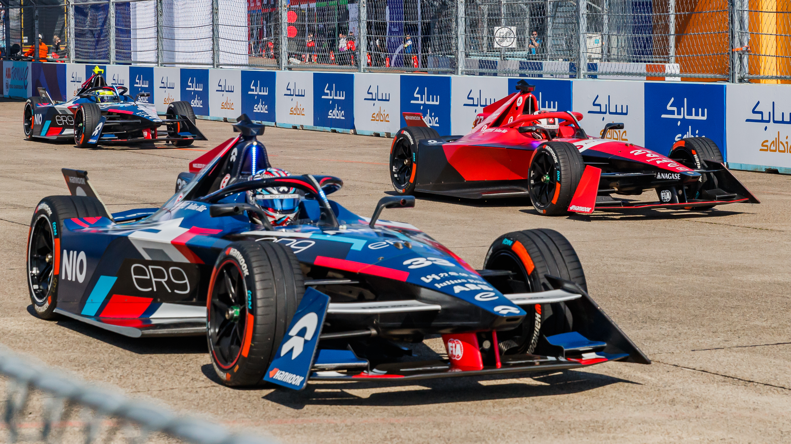

El motorsport es un término que se refiere a las competencias de vehículos motorizados, donde los pilotos compiten en pistas o carreteras. En la actualidad, existen varias categorías de motorsport, cada una con sus propias reglas y niveles de competencia.
La Fórmula 1 es la categoría más prestigiosa del motorsport, donde los pilotos compiten en circuitos de todo el mundo. Es conocida por su alta velocidad, tecnología avanzada y emocionantes carreras.

La Fórmula 2 es una categoría de desarrollo para pilotos jóvenes que aspiran a llegar a la Fórmula 1. Ofrece una plataforma para que los pilotos demuestren su talento y habilidades antes de dar el salto a la máxima categoría.

La Fórmula 3 es otra categoría de desarrollo que sirve como paso previo a la Fórmula 2. Es una plataforma importante para que los pilotos jóvenes adquieran experiencia en carreras de monoplazas y se preparen para competir a niveles más altos.

IndyCar es una categoría de motorsport que se centra en las carreras de monoplazas en Estados Unidos. Es conocida por su velocidad y por competir en circuitos ovales, lo que la diferencia de otras categorías de motorsport.

NASCAR es una categoría de motorsport que se centra en las carreras de stock cars en Estados Unidos. Es conocida por su estilo de carrera en circuito oval y por ser una de las categorías más populares en el país.

GT World Challenge es una categoría de motorsport que se centra en las carreras de autos deportivos de gran turismo. Es conocida por su variedad de fabricantes y por competir en circuitos de todo el mundo.

El World Endurance Championship es una categoría de motorsport que se centra en las carreras de resistencia, donde los equipos compiten durante varias horas o incluso días. Es conocida por su desafío físico y estratégico, así como por la variedad de vehículos que participan.

La Formula E es una categoría de motorsport que se centra en las carreras de autos eléctricos. Es conocida por su enfoque en la sostenibilidad y la innovación tecnológica, así como por competir en circuitos urbanos de todo el mundo.

El Fia World Rally Championship es una categoría de motorsport que se centra en las carreras de rally, donde los pilotos compiten en diferentes terrenos y condiciones climáticas. Es conocida por su desafío y por requerir habilidades especiales para manejar vehículos en entornos exigentes.